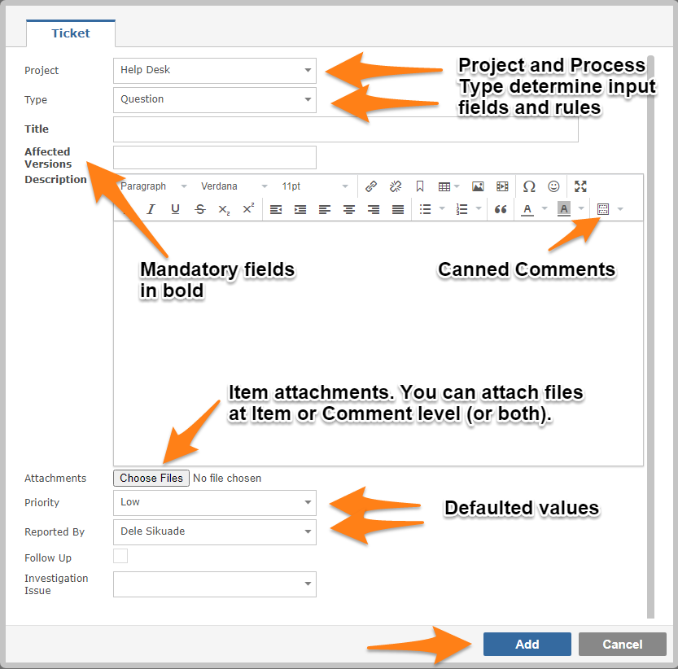
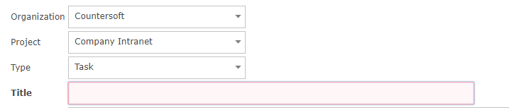
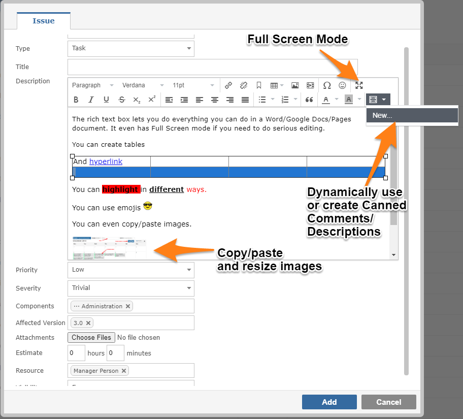
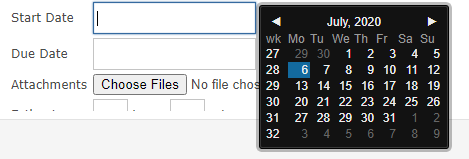

Depending on your permissions, you can create new items in two ways. The first and most obvious method is to click on the plus sign located top right of every screen.
You will be presented with a data entry form that requires completion. Selecting the Project or the Type can dynamically change the fields you are required to provide.
If on the Project Template the Screens definition of the item type you are creating makes a field mandatory, it will appear on the form in bold
Default values, set in Project Settings, will appear on the form. Gemini can do things like default Start Dates using the meta value "TODAY" and Due Date using "TODAY+14" etc.

Any missing, mandatory fields will be highlighted and will require input before the item can be created.

Certain fields allow for rich text content, and Gemini has a Rich Text Editor. Gemini's Rich Text Editor can use "Canned Comments" for rapid entry of replies and descriptions

Date fields have calendar controls to make selecting dates simple.
